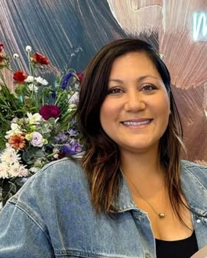
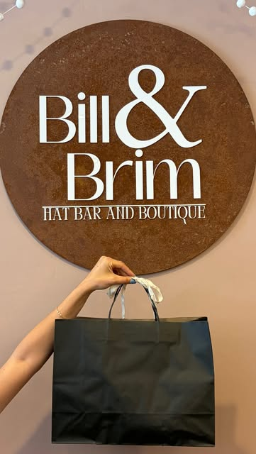
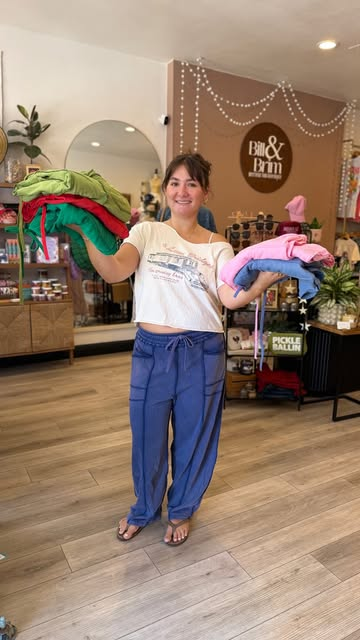
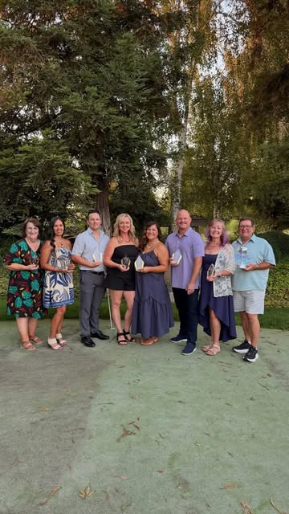

Hi, I'm Kim.
Owner, creator, and the reason the door swings open when you slow down at the window.



A good afternoon on Main Street
Kim Beier will tell you she didn't have it all figured out. She had an idea, a wall of hats in her head, and a stubborn little voice saying go. So she went.
In November 2023, the hat bar officially opened. Kim's own words that week: "I am absolutely overwhelmed by the love." Ripon showed up — because that's what Ripon does, and because people had been waiting for something like this without knowing it.
Then it grew. In October 2024, the Ripon Chamber of Commerce brought the big scissors down to Main Street for a ribbon cutting on the full storefront — boutique and hat bar under one roof. There was wine. There was charcuterie. There was, more or less, the whole town, standing on the sidewalk in the October light.
"Don't wait! Just go for it!"
Kim's motto, and honestly the whole business plan
Ask Kim what the shop is actually about and she won't say hats. She'll say people. A local photographer once described her as someone who "radiates pure joy," and that's the product, really — you come in a little unsure, you sit down at the bar, someone fusses over you for an hour, and you leave a little happier than you came in. Better-hatted, too.
The road so far
-
November 2023
The hat bar opens
Doors open for the first time. "I am absolutely overwhelmed by the love," Kim wrote that week — and she meant it.
-
October 2024
Ribbon cutting on Main Street
The Ripon Chamber of Commerce cut the ribbon on the boutique and hat bar storefront. Wine, charcuterie, and a sidewalk full of neighbors.
-
2025
Hundreds of hats later
Bachelorettes, birthdays, girls' nights, walk-ins on a slow Tuesday. No two hats alike, and a lot of very good photos.
-
2026
Ripon's Business of the Year
The town made it official. Kim will tell you it belongs to everybody who walked through the door.

Awards night in Ripon — Kim with the rest of the year's honorees.
What we believe
Everyone gets welcomed in
A visitor once wrote that we "opened their door and invited us to come inside" while they were window-shopping. That wasn't a one-off. If you're looking in, come in.
Handmade beats mass-made
No two hats here come out the same, and that's on purpose. Yours gets built at the bar, by you, with your hands in it.
Small towns deserve special things
Main Street is the heart of Ripon. We're proud to be on it, and we take the sidewalk out front personally.
Come meet me.
The honest truth is you can't really get this shop off a website. Walk in, try on something you'd never pick online, and let's talk about it. Bring a friend. Bring twelve — that's a party, and we do those too.
find me here
114 W Main Street
Ripon, CA 95366
(209) 679-8076
Open Tuesday through Saturday, with private parties after hours — full hours & directions.
Life's short. Wear the fun hat.
Don't wait — grab your people and get a date on the books.